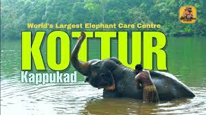
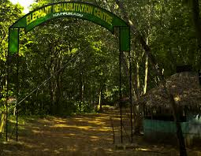
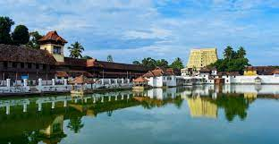
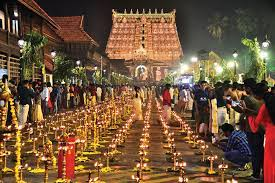

Home of the artisans, base of power, the place where Kerala’s culture and heritage are
preserved and displayed at their finest; these and many other phrases have been used to
describe Thiruvananthapuram. However, the divinity and aura of this place can only be
experienced first hand, as the utter volume of history and lore surrounding the place is
too immense. A city and its surroundings that has seen some of the most poignant
moments in Kerala’s history, it is from here that people can trace the path that has led
to what Kerala is today.
Its name translates to ‘The City of Lord Ananta’, which is a reference to the presiding
deity (Lord Vishnu) of the world famous Sree Padmanabhaswamy Temple. Scores of
museums and libraries cover the landscape of the city, testament to many stories that
chronicle how it managed to sustain its rustic charm. With the advent of modern
infrastructure and technology, Thiruvananthapuram is among those rare locations
where the original ethos of the land still stands strong. Our visitors fall in love with the
many natural wonders that surround this area on all sides.
KOTTUR
An hour away from the capital city lies this picturesque location, famous for its
marvellous Elephant Rehabilitation Centre that is a staple among visitors to the area. A
35 km drive, you’re surrounded by dense forests on all sides, with each turn revealing
noises and sounds that make for a very intensive stay in the wild. Stay for a night or two
at Kappukad and let the majestic and turning trails here help you have a perfect
adventure filled weekend
At the foothills of the Western Ghats, this beautiful site spreads out over 56 kilometres.
Trenches surround the place to hold out any surprise intrusions from the wild, visitors
can begin their trip at 9 AM. Watch the baby elephants be given baths by expert
trainers, along with the majestic tuskers taking dips in the bigger lake. You get an up
close and personal view that is mesmerizing, as the silence of an entire jungle joins you
in watching these wonderful creatures relax and frolic around in the watery depths of
the pristine lake


PADHMANABHA SWAMI TEMPLE
The wealthiest temple in the whole
world, where gemstones, coins and
other treasures to the tune of trillions
of dollars lie in the vaults. One of the
ancient temples in the state, the Sree
Padmanabhaswamy Temple which
blends the Chera and Dravidian
styles of architecture evokes a sense
of wonderment among anyone with
a penchant for history and lores. The
temple rose to fame in the global media
after the wealth was discovered in its
secret vaults. The treasure has been
inventoried and still remains secured in
its vaults, hidden from public view.
Located inside the magnificent fort
complex in Thiruvananthapuram, the
Sree Padmanabhaswamy Temple is
dedicated to Lord Vishnu. The temple’s
history dates back to the 8th century
and is one of the 108 sacred Vishnu
temples in India. The presiding deity of
this temple is Lord Vishnu, reclining on

